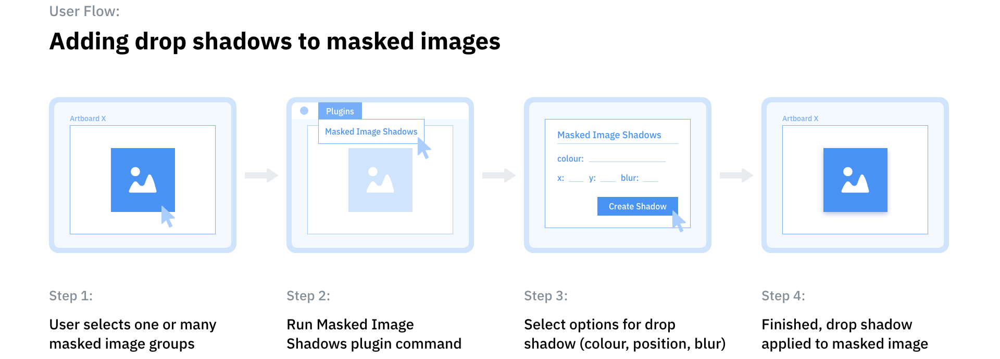

Role
UX, UI, Development
Category
Application
Timeframe
2019
Role
UX, UI, Prototyping
Timeframe
2018
As a part of the Adobe XD Challenge community I have really enjoyed interacting with other creatives, sharing designs, giving and receiving feedback, and answering questions. One question I helped someone with was, “How do I give a masked image a drop shadow?”
While explaining the answer to this question, which involves several steps, I realised that this would be a great process to automate. So I decided to make a plugin that would quickly and easily add drop shadows to masked images.
With the continuing rise of design systems and style guides, designers are increasingly creating UI elements and components that can be easily repeated. Some of the most common patterns include lists of users with avatars, grids of images, and cards. Typically, these common components will include images masked within a shape, and many of those will have drop shadows.
Currently, Adobe XD does not allow the user to easily add drop shadows to masked images using the Property Inspector within the application itself. Therefore, to add a drop shadow to a masked image within Adobe XD, the user must execute the following five steps:
While it only takes a few steps to complete this task, it quickly becomes apparent that designers would need to repeat this process many times when designing an application. Therefore, those five steps would add up to a lot of work if a design had many masked images with drop shadows.
The first step was to figure out the user experience for this plugin and what users would expect the plugin to accomplish. It was also important to be mindful about not breaking any design systems or prototypes the user has created in their document. I didn’t want to solve one problem and create another, such as arbitrarily changing layer names or breaking prototype flows for instance.
In order to create a concept for how the plugin would work I created a user flow.
I decided that the most important considerations were speed, ease of use, and repeatability. Therefore, the plugin would need to be able to:
Once I had determined the requirements, flow, and structure of the plugin I spent a lot of time reading the Adobe XD Platform Documentation and studying the APIs. This was the first time I had developed something of this sort, so it required quite a bit of studying and an increase in my understanding. In the process I learnt a lot about the scenegraph — a node tree which represents the structure of an Adobe XD document including its artboards, objects, and layers — working with the selection object, and executing commands.
In order to create a plugin for Adobe XD, you use JavaScript to access the APIs and write functions to execute commands, and any UI (dialog modal) for plugins is created using HTML and CSS. I started by writing the necessary functions to accomplish the task of adding drop shadows to masked images. This process was iterative and included a lot of testing within Adobe XD and debugging the plugin via the Developer Console. Once that was finished, I designed and then developed a dialog modal where the user could make a few selections to edit the drop shadow that would be applied.
Dialog modal letting the user set up the drop shadow.
After the plugin was designed and developed, I browsed through the Adobe XD Plugin Experience Guidelines and incorporated some changes into my plugin’s code to improve the user experience. For instance, I added an error modal with feedback if an incorrect selection was made prior to running the plugin.
Error modal with feedback.
The final step was to package then publish the plugin to the Adobe XD Plugin Manager.
I have released the first version of the Masked Image Shadows plugin to the Adobe XD Plugin Manager. The plugin effectively meets my specification of a MVP for this project, which was to quickly and easily add drop shadows to masked images.
Video showing the plugin in action.
I have a roadmap of features that I want to implement next, including features that will allow the user to use the plugin in a more open and robust way. This will include checking the types of objects that have been selected and only executing the plugin’s functions on masked image groups and validating the input values in the dialog modal, such as RGB colour values (0-255) and opacity (0.0-1.0).
If you are interested in checking out and trying this plugin you can: